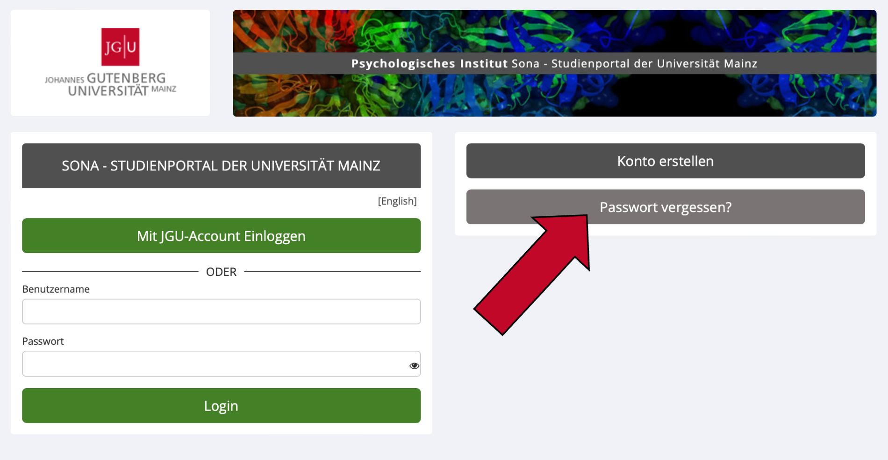

5 Sonstiges
5.1 Passwort vergessen?
Wenn Sie Ihr Passwort vergessen haben, können Sie Ihr Passwort zurücksetzen.
- Besuchen Sie die Startseite von Sona: https://uni-mainz-jgu.sona-systems.com
- Klicken Sie rechts auf den Knopf
Passwort vergessen?

- Geben Sie im erscheinenden Fenster Ihre E-Mail-Adresse oder Ihren Benutzernamen an.
- Daraufhin wird Ihnen ein Link zum Zurücksetzen Ihres Kennworts per E-Mail zugesandt. Dieser Link ist 24 Stunden lang gültig. Sobald Sie auf den Link klicken, wird ein neues Passwort generiert und Ihnen per E-Mail zugeschickt. Falls Sie eine Kennwortzurücksetzung angefordert haben und nach 30 Minuten noch keine E-Mail vom System eingetroffen ist, überprüfen Sie den Junk-Mail-Ordner Ihres E-Mail-Programms.
5.2 Sona APP
Es gibt eine kostenlose Sona App, die Sie im App Store (IOS) oder Google Play Store (Android) herunterladen können. Suchen Sie dafür nach „Sona“ oder „Sona Mobile“. Im Gegensatz zur Browser-Version hat die App allerdings nur eingeschränkte Funktionen.
5.3 Forschenden-Account löschen oder deaktivieren
Forschenden-Accounts können nur durch die Administration gelöscht oder deaktiviert werden. Falls Sie Ihren Account löschen oder deaktivieren möchten, schreiben Sie bitte eine E-Mail an sona@uni-mainz.de.
5.4 Noch Fragen?
Auf der offiziellen Website von Sona Systems (https://www.sona-systems.com/researcher-documentation/) gibt es eine ausführliche Dokumentation auf Englisch. Falls Sie weitere Fragen oder Probleme haben, wenden Sie sich bitte an die Administration unter sona@uni-mainz.de.